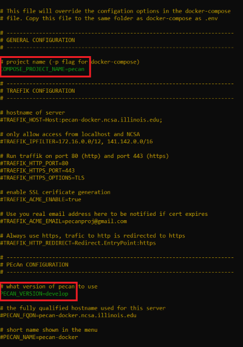

4 Install PEcAn
These instructions are provided to document how to install and setup PEcAn. It includes:
The PEcAn code and necessary infrastructure can be obtained and compiled in different ways. This set of instructions will help facilitate your path and the steps necessary to move forward to have a fully a functioning PEcAn environment.
4.1 Virtual Machine (VM)
The PEcAn virtual machine consists of all of PEcAn pre-compiled within a Linux operating system and saved in a “virtual machine” (VM). Virtual machines allow for running consistent set-ups without worrying about differences between operating systems, library dependencies, compiling the code, etc.
Install VirtualBox This is the software that runs the virtual machine. You can find the download link and instructions at http://www.virtualbox.org. NOTE: On Windows you may see a warning about Logo testing, it is okay to ignore the warning.
Download the PEcAn VM You can find the download link at http://opensource.ncsa.illinois.edu/projects/artifacts.php?key=PECAN, under the “Files” header. Click the “.ova” file to begin the download. Note that the file is ~7 GB, so this download can take several minutes to hours depending on your connection speed. Also, the VM requires >4 GB of RAM to operate correctly. Please check current usage of RAM and shutdown processes as needed.
Import the VM Once the download is complete, open VirtualBox. In the VirtualBox menus, go to “File” → “Import Appliance” and locate the downloaded “.ova” file.
For Virtualbox version 5.x: In the Appliance Import Settings, make sure you select “Reinitialize the MAC address of all network cards” (picture below). This is not selected by default and can result in networking issues since multiple machines might claim to have the same network MAC Address.

For Virtualbox versions starting with 6.0, there is a slightly different interface (see figure). Select “Generate new MAC addresses for all network adapters” from the MAC Address Policy:

NOTE: If you experience network connection difficulties in the VM with this enabled, try re-importing the VM without this setting selected).
Finally, click “Import” to build the Virtual Machine from its image.
- Launch PEcAn Double click the icon for the PEcAn VM. A terminal window will pop up showing the machine booting up which may take a minute. It is done booting when you get to the
pecan login:prompt. You do not need to login as the VM behaves like a server that we will be accessing through you web browser. Feel free to minimize the VM window.
- If you do want to login to the VM, the credentials are as follows:
username: carya,password: illinois(after the pecan tree, [Carya illinoinensis][pecan-wikipedia]).
Open the PEcAn web interface With the VM running in the background, open any web browser on the same machine and navigate to
localhost:6480/pecan/to start the PEcAn workflow. (NOTE: The trailing backslash may be necessary depending on your browser)Advanced interaction with the VM is mostly done through the command line. You can perform these manipulations from inside the VM window. However, the VM is also configured for SSH access (username
carya, hostnamelocalhost, port 6422). For instance, to open an interactive shell inside the VM from a terminal on the host machine, use a command likessh -l carya -p 6422 localhost(when prompted, the password isillinois, as above).
These steps should be enough to get you started with running models and performing basic analyses with PEcAn. For advanced details on VM configuration and maintenance, see the Advanced VM section.
4.2 Docker
This is a short documentation on how to start with Docker and PEcAn. This will not go into much detail about about how to use Docker – for more details, see the main Docker topical page.
Install Docker. Follow the instructions for your operating system at https://www.docker.com/community-edition#/download. Once Docker is installed, make sure it is running. To test that Docker is installed and running, open a terminal and run the following commands:
If successful, this should return a message starting with
"Hello from Docker!". If this doesn’t work, there is something wrong with your configuration. Refer to the Docker documentation for debugging.NOTE: Depending on how Docker is installed and configured, you may have to run this command as
sudo. Try running the command withoutsudofirst. If that fails, but running assudosucceeds, see these instructions for steps to use Docker as a non-root user.Install docker-compose. If you are running this on a Mac or Windows this might be already installed. On Linux you will need to install this it separately; see https://docs.docker.com/compose/install/.
To see if docker-compose is successfully installed, use the following shell command:
This should print the current version of docker-compose. We have tested the instruction below with versions of docker-compose 1.22 and above.
Download the PEcAn docker-compose file. It is located in the root directory of the PEcAn source code. For reference, here are direct links to the latest stable version and the bleeding edge development version. (To download the files, you should be able to right click the link and select “Save link as”.) Make sure the file is saved as
docker-compose.ymlin a directory calledpecan.Initialize the PEcAn database and data images. The following
docker-composecommands are used to download all the data PEcAn needs to start working. For more on how they work, see our Docker topical pages.Create and start the PEcAn database container (without any data)
If this is successful, the end of the output should look like the following:
Creating pecan_postgres_1 ... done“Initialize” the data for the PEcAn database.
This should produce a lot of output describing the database operations happening under the hood. Some of these will look like errors, but this is normal. This command succeeded if the output ends with the following (the syntax for creating a new user for accessing BetyDB):
docker-compose run bety user 'login' 'password' 'full name' 'email' 1 1Add a user to BetyDB using the example syntax provided as the last line of the output of the previous step:
Download and configure the core PEcAn database files.
This will produce a lot of output describing file operations. This command succeeded if the output ends with the following:
###################################################################### Done! ######################################################################Download the
pecan/docker/env.example& save it as.envfile. Now, open the.envfile & uncomment the lines mentioned below: Setting
PECAN_VERSION=developindicates that you want to run the bleeding-edgedevelopbranch, meaning it may have bugs. To go ahead with the stable version you may setPECAN_VERSION=latestorPECAN_VERSION=<release-number>(For example1.7.0). You can look at the list of all the releases of PEcAn to see what options are availble.
Start the PEcAn stack. Assuming all of the steps above completed successfully, start the full stack by running the following shell command:
If all of the containers started successfully, you should be able to access the various components from a browser via the following URLs (if you run these commands on a remote machine replace localhost with the actual hostname).
- PEcAn web interface (running models) – http://localhost:8000/pecan/ (NOTE: The trailing backslash is necessary.)
- PEcAn documentation and home page – http://localhost:8000/
- BETY web interface – http://localhost:8000/bety/
- File browser (minio) – http://localhost:8000/minio/
- RabbitMQ management console (for managing queued processes) – http://localhost:8000/rabbitmq/
- Traefik, webserver showing maps from URLs onto their respective containers – http://localhost:8000/traefik/
- Monitor, service that monitors models and shows all models that are online as well as how many instances are online and the number of jobs waiting. The output is in JSON – http://localhost:8000/monitor/
For troubleshooting and advanced configuration, see our Docker topical pages.
4.3 (Advanced) Native install
The full PEcAn system has a lot of dependencies, including R packages, compiled C and Fortran libraries, and system services and utilities. Installing all of these side by side, and getting them to work harmoniously, is very time-consuming and challenging, which is why we strongly encourage new users to use the VM or Docker if possible.
In a nutshell, the process for manual installation is as follows:
Download the PEcAn source code from GitHub. The recommended way to do this is with the shell command
git clone, i.e.git clone https://github.com/pecanproject/pecan.Download the BETY source code from GitHub.
Install the PEcAn R packages and their dependencies. This can be done by running the shell command
makeinside the PEcAn source code directory. Note that many of the R packages on which PEcAn depends have system dependencies that are not included by default on most operating systems, but almost all of which should be available via your operating system’s package manager (e.g. Homebrew for MacOS,aptfor Ubuntu/Debian/Mint Linux,yumfor RedHat Fedora/CentOS).- Install and configure PostgreSQL
Install and configure the Apache web server.
For more details, see our notes about OS Specific Installations.